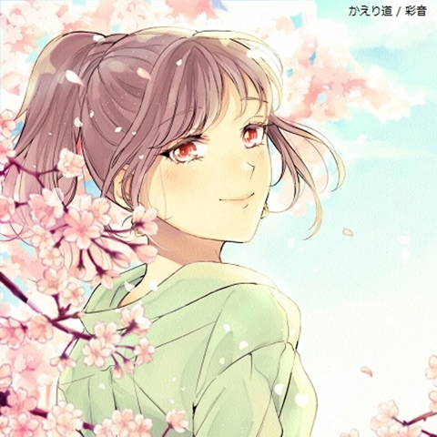

彩音-Ayaonon-のデビュー曲。 辛い時は泣いてもいい。 でも、ずっとひとりぼっちだとか不幸だとは思わないで、あなたを待ってる人は必ずいる。笑えばわ必ず幸せがやってくる。さあ！明日に向かって夕日のその先へ行こう！と手を繋いで歩んでいく自分を背景に作りました。
そっと流れ込んだ 秋の風が 頭の中を冷やしていく
たくさん悩んで疲れた体を包み込むように
こんな日はふと考えながら
新たな道に進みたい 君と
夢を追いかけるために誓った
約束の場所をみる
今かかげた未来図
まだ、ところどころ埋まってない
この先に行き止まりがあっても
自分で決めた道だから
言葉にすることで夢は大きく切り開く
そこで壁にぶつかったなら
そっと手を差し伸べてくれる
仲間の存在を忘れないで欲しい
私もそこにいるから
夢は何のためにあるのだろう
輝いていた日々は今どこへ
惨めな自分を見せたくないと 心の扉を閉める
ダメだ 向いていないと
逃げ道を作る自分がいる
絡み合う自問自答さえも
全て切りとってしまいたい
自分に負けたくない弱音を吐きたくない
約束のあの場所へたどり着きたい
そんな時 流れ込む風が
背中を押しながら 教えてくれた事
自分と向き合う勇気
悩みながら 迷いながら描いた未来で
気づいたのあの時背中を
押してくれたのは未来の風
言葉にする事で夢は大きく切り開く
そこで壁にぶつかったなら
そっと手を差し伸べてくれる
仲間の存在を忘れないで欲しい
そう教えてくれたんだ
奇跡を創り合おう 笑顔を創り合おう
それが未来の自分との約束
叶えたらあの場所へいこう
始まりを告げた 過去と未来を繋いだ
風は夢の道しるべ